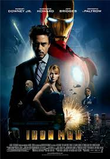
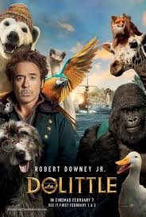
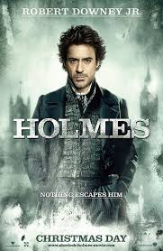
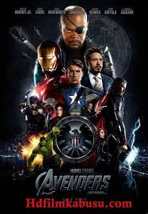

SPOTSTAR - ROBERT DOWNEY JR
Robert Downey Jr. is one of the most iconic and versatile actors in Hollywood. Born in 1965 in New York City, he was introduced to the film industry at a young age by his father, a filmmaker. Downey gained early acclaim for his roles in films like Less Than Zero and Chaplin, where he portrayed Charlie Chaplin with remarkable precision. Despite his early success, his career faced serious setbacks due to substance abuse issues, which led to multiple arrests and rehab stints. However, his comeback is considered one of the greatest in Hollywood history. With unwavering determination and support from close ones, he rebuilt his career and reputation. His portrayal of Tony Stark in the Marvel Cinematic Universe turned him into a global superstar and a household name. Beyond Iron Man, he has impressed audiences with roles in Sherlock Holmes, Zodiac, and The Judge. Downey is known for his sharp wit, charisma, and deep commitment to his craft. Off-screen, he is admired for his philanthropic efforts and environmental activism. His journey is an inspiring tale of talent, resilience, and redemption.
POPULAR FILMS




